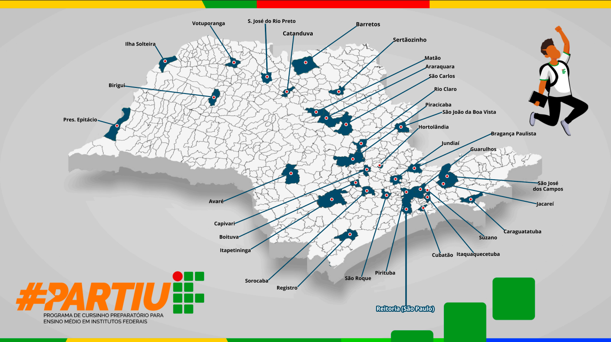

Sobre o IFSP - Câmpus Pirituba
Nossa História
O Câmpus Pirituba do Instituto Federal de São Paulo foi inaugurado em 2010, como parte do plano de expansão da Rede Federal de Educação Profissional e Tecnológica. Localizado na zona noroeste da cidade de São Paulo, o câmpus atende uma região com mais de 400 mil habitantes, oferecendo educação pública, gratuita e de qualidade.
Desde sua fundação, o Câmpus Pirituba tem se consolidado como referência em educação profissional e tecnológica, formando milhares de profissionais que contribuem para o desenvolvimento da região e do país.
Missão, Visão e Valores
Missão
Ofertar educação profissional e tecnológica de excelência, contribuindo para a formação integral do cidadão e para o desenvolvimento sustentável da região de Pirituba e entorno.
Visão
Ser reconhecido como centro de referência em educação profissional e tecnológica, inovação e extensão, integrado às demandas da comunidade e do mundo do trabalho.
Valores
- Compromisso com a qualidade: Busca contínua pela excelência no ensino, pesquisa e extensão
- Ética e transparência: Atuação pautada pela honestidade e clareza nas relações
- Inovação e sustentabilidade: Fomento à criatividade e respeito ao meio ambiente
- Inclusão e diversidade: Respeito às diferenças e promoção da igualdade de oportunidades
- Integração com a comunidade: Diálogo permanente com a sociedade e setores produtivos
Infraestrutura
O Câmpus Pirituba conta com uma infraestrutura moderna e adequada para oferecer ensino de qualidade:
Salas de Aula
- 12 salas de aula convencionais, todas equipadas com projetores multimídia
- 2 salas ambiente para metodologias ativas
- Climatização em todos os ambientes
Laboratórios
- 6 laboratórios de informática com softwares atualizados
- 2 laboratórios de física e química
- 1 laboratório de eletrônica
- 1 laboratório de práticas de gestão
- 1 laboratório de línguas
Biblioteca
- Acervo com mais de 12.000 exemplares entre livros, periódicos e materiais multimídia
- Salas de estudo individual e em grupo
- Acesso à internet e bases de dados científicas
- Integração com a biblioteca digital
Outros Espaços
- Auditório com capacidade para 150 pessoas
- Quadra poliesportiva coberta
- Refeitório e cantina
- Estacionamento
- Área de convivência
Cursos Oferecidos
Atualmente, o Câmpus Pirituba oferece as seguintes opções de cursos:
Ensino Superior
- Tecnologia em Análise e Desenvolvimento de Sistemas
- Bacharelado em Engenharia de Produção
- Tecnologia em Gestão da Tecnologia da Informação
- Licenciatura em Letras - Português/Inglês
- Tecnologia em Gestão Pública
Cursos Técnicos
- Técnico em Informática (concomitante/subsequente)
- Técnico em Administração (concomitante/subsequente)
- Técnico em Eletrônica (concomitante/subsequente)
Formação Inicial e Continuada (FIC)
- Programação Básica em Python
- Inglês Básico
- Assistente Administrativo
- Gestão de Pequenos Negócios
Números do Câmpus Pirituba
| Indicador | Quantidade |
|---|---|
| Alunos matriculados | 1.850 |
| Docentes | 85 |
| Técnicos administrativos | 42 |
| Cursos superiores | 5 |
| Cursos técnicos | 3 |
| Laboratórios | 12 |
| Projetos de pesquisa | 25 |
| Projetos de extensão | 18 |
Contato e Localização
Endereço
Av. Mutinga, 951 - Jardim Santo Elias
São Paulo/SP - CEP: 05110-000
Telefones
Recepção: (011) 2504-0100
Secretaria Acadêmica: (011) 2504-0101
Biblioteca: (011) 2504-0102
Geral: pirituba@ifsp.edu.br
Secretaria: secretaria.prt@ifsp.edu.br
Biblioteca: biblioteca.prt@ifsp.edu.br
Horário de Funcionamento
- Segunda a Sexta: 8h às 22h
- Sábado: 8h às 12h (atendimento restrito)
Localização

O Câmpus está localizado próximo à estação Pirituba da CPTM e conta com fácil acesso por ônibus.
Como Chegar
De trem (CPTM)
- Linha 7-Rubi: Estação Pirituba
- Ao sair da estação, caminhe cerca de 10 minutos pela Av. Mutinga
De ônibus
- Linhas: 178A, 178T, 8012-10, 8545-10
- Desembarque na Av. Mutinga, próximo ao número 951
De carro
- Acesso pela Av. Mutinga, sentido bairro
- Estacionamento disponível no local